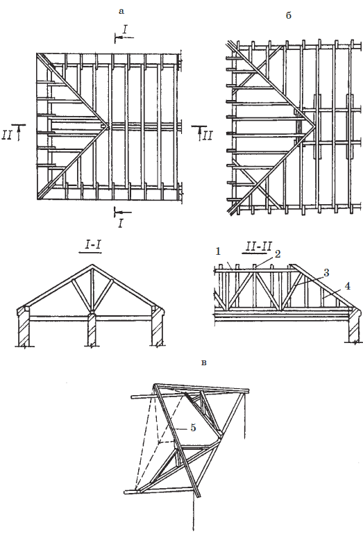
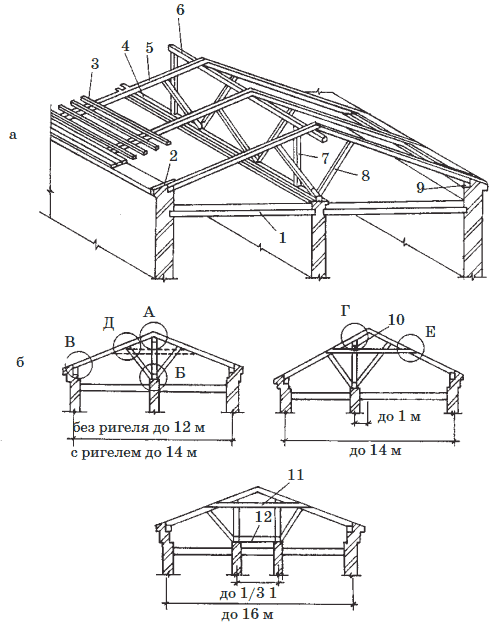
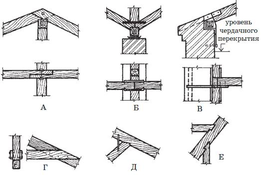
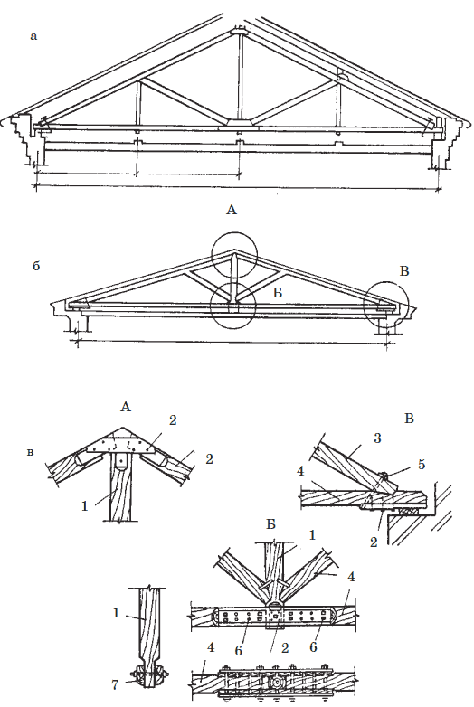
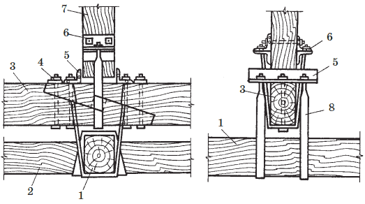

Устройство крыши.

Невозможно представить себе нормальное жилище без крыши. И не зря выражение «есть крыша над головой» означает, что у человека есть дом. Но функциональная ценность крыши не уменьшает и не заслоняет ее декоративные достоинства, особенно для дачных домиков. Часто крыша составляет почти половину дома, а если взять домик типа «шалаш», то это – одна сплошная крыша.
Крыша здания имеет несущую и ограждающую части. Несущая часть состоит из деревянных или железобетонных стропил, деревянных, стальных строительных ферм или железобетонных панелей. Несущая часть передает нагрузку от снега, ветра и собственного веса крыши на стены и отдельные опоры. Ограждающая часть крыши состоит из следующих элементов: кровли – верхней водонепроницаемой оболочки крыши, и основания под кровлю в виде обрешетки из деревянных брусков, дощатого настила или цементного слоя по железобетонной основе.
Кровли в зависимости от материала устанавливают деревянные, из глиняной черепицы, металлочерепицы, кровельной листовой стали. Кровли из волнистых асбестоцементных листов (шифера), плоских асбестоцементных плиток, рулонных материалов – толи и рубероида в настоящее время применяются редко.
Несущая часть крыши должна обладать необходимой прочностью и устойчивостью, ограждающая часть – легкостью, устойчивостью к химическим и атмосферным воздействиям, водонепроницаемостью, малой теплопроводностью.
Крыши в домах устраивают бесчердачные и чердачные. Для проветривания и освещения чердака в крыше устраивают чердачные окна.
При устройстве бесчердачной крыши элементы чердачного покрытия и крыши совмещают в одной конструкции – покрытии, предохраняющем здание от охлаждения в зимнее время и атмосферных осадков.
Для обеспечения стока атмосферной воды поверхность из разных материалов должна иметь соответствующий уклон, который выражается отношением высоты подъема h к половине перекрываемого пролета L или в градусах угла наклона крыши к горизонту L. Например, при L=27 отношение H: L=1:2. При пологих крышах уклон иногда выражают в процентах, для этого отношения H: L умножают на 100.
В зависимости от уклона крыши бывают плоские и скатные. Плоские крыши имеют малый уклон – не более 3 %. Скатные крыши представляют собой системы пересекающихся наклонных плоскостей – скатов. Пересечения скатов крыши образуют двухгранные углы, из которых обращенные кверху называются ребрами, а обращенные книзу – разжелобками или ендовами. Верхнее горизонтальное ребро пересечения скатов крыши называется коньком.
Уклон скатных крыш принимают в зависимости от вида кровли, например, для глиняной черепицы уклон крыши составляет 1:1–1:2, для кровельной листовой стали 1:3,5 (L=16).
Скатные крыши с уклоном до 15 % называют пологими, с уклоном более 15 % – крутыми.
В строительстве применяют разнообразные формы крыши, которые выбирают с учетом общей конфигурации здания в плане, возможного направления отвода воды, а также индивидуальных архитектурных возможностей. Односкатные крыши в настоящее время применяются редко, их устраивают над зданиями сравнительно небольшой ширины и в случаях, когда отвод воды можно организовать только к одной из продольных стен.
Двускатная, или щипцовая крыша состоит из двух скатов, направленных в противоположенные стороны. Образующиеся треугольники в верхней части торцовых стен называют щипцами или фронтонами.
Четырехскатная крыша имеет скаты на четыре стороны. Скаты, направленные к торцовым стенам, называются вальмами, отсюда название крыш – вальмовые. Щипцовые стены в этом случае отсутствуют.
Вариантом вальмовой крыши является полувальмовая или полущипцовая крыша. Боковые скаты срезают только часть щипца и имеют вследствие этого по линии уклона меньшую, чем основные скаты, длину. Полувальма, расположенная вверху, имеет форму треугольника.
Выбор материала и типа конструкции крыши зависит от расположения в здании внутренних опор, величины перекрываемых пролетов, уклона кровли и требований, предъявляемых к крыше: огнестойкости, теплотехнических свойств и долговечности.
Простейшим типом несущей конструкции скатных крыш являются наклонные деревянные стропила. Наклонные стропила двускатной крыши опирают нижними концами на подстропильные брусья – мауэрлаты, а верхними – на горизонтальный брус, называемый верхним коньковым прогоном. Верхний прогон поддерживается стойками, установленными на внутренние опоры. Расстояние между стойками, несущими коньковые прогоны, принимают от 3 до 5 м.
Для увеличения продольной жесткости конструкции стропил и уменьшения сечения коньковых прогонов укрепляют парные продольные подкосы, расположенные у каждой стойки или через одну при небольших пролетах. Для уменьшения свободного пролета стропильных ног устанавливают поперечные подкосы, опираемые на лежень внизу и подпирающие стропильные ноги вверху. В случае смещения внутренней опоры от центральной оси здания не более, чем на 1 м, стойку, поддерживающую прогон, устанавливают наклонно.
При имеющихся в здании двух капитальных продольных стен или двух рядов внутренних столбцов укладывают два верхних прогона. Стропильные ноги в этом случае по длине могут быть составными. Для увеличения жесткости конструкции необходимо устанавливать ригели.
В четырехскатных вальмовых крышах в местах пересечения скатов необходимо располагать диагональные накосные стропильные ноги ( рис. 1), в некоторые врубают укороченные стропильные ноги – нарожники.

Рис. 1. Наклонные стропила в зданиях (в плане): а – с одной внутренней опорой; б – с двумя внутренними опорами; в – общий вид шпренгелей для опирания накосных стропильных ног: 1 – прогон; 2 – стропильная нога; 3 – подкос под прогон; 4 – нарожники; 5 – накосная (диаго нальная нога)
Диагональные стропильные ноги имеют большую длину и несут значительную нагрузку. Поэтому их поддерживают в пролете промежуточной опорой в виде подкоса или поставленной в углу здания шпренгельной конструкцией. Нижним концом диагональную стропильную ногу опирают на подстропильные брусья в углу, в месте их сопряжения или на балку, уложенную наискось на подстропильные брусья на некотором расстоянии от угла. При наличии одного прогона верхний конец диагональной ноги опирается на его консоль, а при двух прогонах – на пробоины, прикрепленные гвоздями к концам стропильных ног. Консоли прогонов используют как промежуточные опоры на косых ногах. На рис. 3показаны детали узлов деревянных брусчатых стропил. В местах сопряжения стропилы усиливают металлическими креплениями: гвоздями, болтами, скобами.

Рис. 2. Конструктивные схемы деревянных наклонных стропил: а – общий вид; б – для двускатных крыш: 1 – чердачное перекрытие; 2 – кобылка; 3 – обрешетка; 4 – лежень; 5 – стропильная нога; 6 – верхний прогон; 7 – стойка; 8 – подкос; 9 – мауэрлат; 10 – верхний прогон; 11 – ригель; 12 – распорка

Рис. 3. Детали узлов деревянных брусчатых наклонных стропил А—Е
В зданиях, не имеющих внутренних опор, невозможно устраивать наклонные стропила. Поэтому в качестве несущих конструкций крыши применяют строительные фермы, к которым подвешивается чердачное перекрытие. Расположенные по верхнему контуру фермы, стержни образуют верхний пояс строительной фермы, по нижнему контуру – нижний пояс. Стойки – вертикальные стержни и раскосы – наклонные стержни, расположенные между верхним и нижним поясами, образуют решетку фермы. Стропильные фермы изготовляют деревянные, стальные и железобетонные. В продольном направлении фермы устанавливают на расстоянии 4–6 м друг от друга. Простейшим видом деревянной строительной фермы являются шпренгельные фермы. Шпренгельные фермы для пролетов от 10 до 12 м изображены на рис. 4.Фермы состоят из стропильных ног, затяжки, воспринимающей распор, вертикальной подвески – бабки, к которой подвешена затяжка, и подкосов.

Рис. 4. Деревянные шпренгельные фермы: а – со стальными подвесками; б – с деревянными подвесками; в – детали узлов: 1 – бабка; 2 – гвозди; 3 – стропильная нога; 4 – затяжка; 5 – аварийный болт; 6 – болты; 7 – болтовые нагели
Ввиду большой ширины здания при установке шпренгельных и строительных ферм чердачное перекрытие недопустимо перекрывать балками, опирающимися на стены. Конструкцию чердачного перекрытия подвешивают на стальных хомутах к затяжке стропил или к нижнему поясу фермы, образуя подвесные перекрытия.
При наличии подвесного чердачного перекрытия подвески или бабки висячих стропил, работающие на растяжение, иногда выполняют из стальных тяжей. На рис. 5изображены детали узлов подвесного чердачного деревянного перекрытия. К затяжке деревянных висячих стропил подвешены в перпендикулярном к ней направлении на хомутах из полосовой стали деревянные прогоны. Перпендикулярно к прогонам подвешены деревянные балки, между которыми уложено облегченное межбалочное заполнение. Для уменьшения нагрузки на висячие стропила или стропильную ферму следует выбирать конструкцию для подвесного перекрытия, имеющую небольшой собственный вес.

Рис. 5. Детали узлов подвесного чердачного перекрытия: 1 – прогон; 2 – балка подвесного перекрытия; 3 – затяжка; 4 – болты; 5 – уголки 60?60; 6 – уголки для прогонов; 7 – балка; 8 – хомут для прогонов
В стальных фермах подвесное чердачное перекрытие изготовляют несгораемым по стальным балкам. Между балками укладывают сборные железобетонные плиты, по ним – легкий утеплитель и армопенобетонные или армопеносиликатные плиты. При устройстве утепления подвесного чердачного перекрытия необходимо предусмотреть защиту стальных балок от охлаждения, поскольку вследствие конденсации водяных паров будет происходить ржавление нижней полки балок, и возможно образование нежелательных желтых полос. В целях повышения огнестойкости и долговечности несущие конструкции скатных крыш целесообразно выполнять из железобетона, а железобетонные несущие конструкции скатных крыш рекомендуется выполнять бесстропильными из крупноразмерных панелей заводского изготовления.
Кабельная система против обледенения крыш заключается в том, что по периметру крыши протягивают электрический кабель, который работает при температурном режиме воздуха от 0 °C до -15 °С и при наличие воды или льда на крыше. Система снабжена температурным и влажностным датчиками, которые устанавливают по краю крыши с южной стороны. С помощью датчиков регулируют включение и отключение кабельной системы.
Более дорогие системы управления позволяют не только включать и отключать нагрев, но и задавать время работы в зависимости от температуры: крыша прогревается тем дольше, чем сильнее мороз.
Перед установкой системы следует обратить внимание на качество кабеля. Кабель должен иметь мощную внутреннюю оплетку и надежный слой изоляции из стойкого материала для обеспечения механической прочности кабеля и электробезопасности системы.
По материалам книги Валентины Ивановны Назаровой
" Современные работы по постройке крыши и настилу кровли. "
А также из других источников Интернет
Уважаемый Читатель - после ознакомления с Книгой
рекомендую Вам заказать ее бумажное издание.